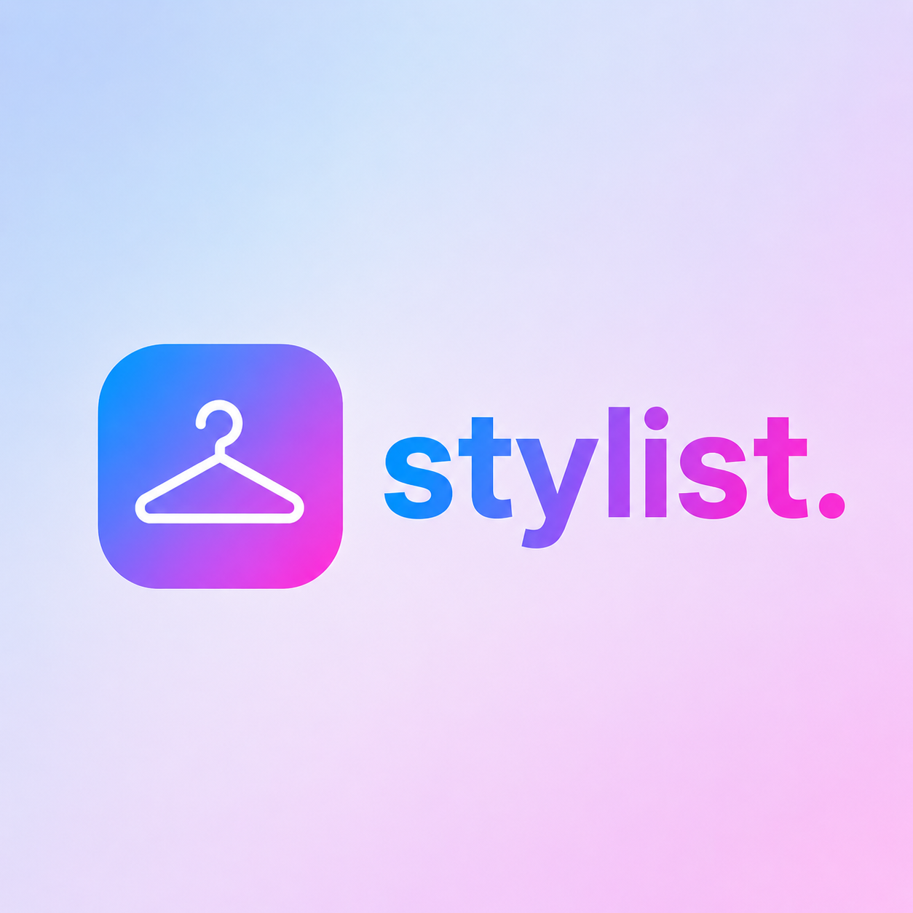

A curated collection of projects and case studies that demonstrate my approach
to machine learning engineering, artificial intelligence, and system design.
Each article explores the challenges, solutions, and insights gained throughout
the development process.
The her. series
A family of products built around learned outfit compatibility
Machine Learning · Full-Stack
her.
An intelligent fashion assistant powered by a custom outfit compatibility model
her. is a machine learning project that serves as a personal AI stylist,
leveraging my custom-trained compatibility model, stylist., to analyse
fashion preferences and provide personalised outfit recommendations.
The application combines computer vision and natural language processing
to understand user style and suggest clothing combinations, exploring the
intersection of fashion, technology, and personal expression.
PythonC#React NativePostgreSQLAWS

Companion to her.
Computer Vision · Metric Learning
stylist.
The compatibility model at the core of her.
A siamese network trained on human-curated Polyvore outfits to learn
outfit compatibility as a metric learning problem. Items are encoded
into a shared embedding space where compatible pairs sit geometrically close.
Trained end-to-end with triplet loss and hard negative mining.
core. combines an Angular planner with a C# REST API, PostgreSQL,
and a Python LangChain agent with long-term vector memory.
The agent can understand your planning context and create entries
directly in the system.
The result is a personal AI workspace that can read, create, and
reason about your week through a conversational interface.
An end-to-end solo-built system using YOLOv8n to count people moving
through a city environment in real time.
The resulting data is surfaced through a Power BI dashboard backed
by MongoDB.
PythonYOLOv8nMongoDBPower BI
Smaller Projects
Deep learning work
↓
NLP · Deep Learning
LSTM Sentiment Analyser
A 2-layer LSTM trained on 25,000 IMDB reviews for binary sentiment
classification, achieving 80% accuracy. Built end-to-end with custom
tokenisation, an embedding layer, and a FastAPI serving layer.
Live on Hugging Face Spaces.
A decoder-only transformer built from first principles in PyTorch,
using attention heads, positional encoding, and all. Trained on
Shakespeare's complete works as a character-level generative model,
producing period-plausible prose.
A decoder-only transformer built from scratch in PyTorch to generate
original music. Music is tokenised into a 388-token event vocabulary
and the model is trained on 5,000 MIDI files to autoregressively predict
the next musical event.
Data analysis and machine learning project analysing the impact of LED public lighting
on distribution transformer capacity and the feasibility of allocating released power
to electric vehicle charging. Extended with predictive modelling of network capacity
and PTD occupancy using statistical analysis, regression, and machine learning.
A full-stack port management application with a .NET 8 Web API backend,
Entity Framework Core, PostgreSQL, and a modern Angular 18 frontend.
Containerised with Docker for multi-container orchestration across
development and production environments.